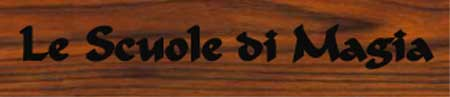
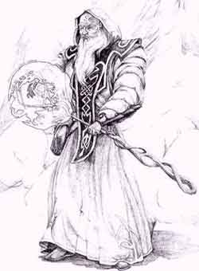
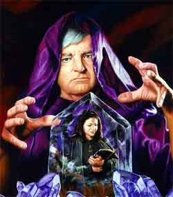
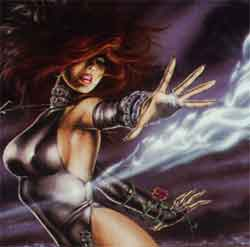
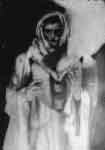

Dopo secoli di studi della magia i maghi sono giunti ad enunciare una serie di leggi basate su studi, ricerche e sperimentazioni magiche. Sulla base di queste ricerche si pone la distinzione fra le scuole di magia. I maghi cioè sono giunti a questa conclusione : nel momento che si utilizza la magia modificando la realtà sensibile utilizzando l’aura di energia che circonda ogni cosa si seguono procedure distinte a seconda del risultato che si vuole perseguire o della fonte utilizzata. In base a questa conclusione è stata enunciata le fondamentale prima legge sulla magia in generale :
Prima legge sulla magia in generale
Utilizzando
una diversa fonte di aura oppure modificando il risultato
Da una lettura negativa di questa legge si desume che modificando il metodo richiesto per utilizzare la magia si ottengono dei risultati di volta in volta differenti. Proprio da questo rilievo si sono poi distinte le scuole di magia, una volta che in seguito a studi e sperimentazioni si è giunti a ravvisare in otto differenti possibili metodi per usare la magia in grado di comprendere tutti i possibili risultati da raggiungere. Sono state così studiate le otto differenti scuole di magia necessarie, ben potrebbero ora crearsi ulteriori scuole (come quella degli elementalisti) che raggruppino effetti di magia simili fra loro ma finirebbero per catalogare delle magie già comprese nelle altre scuole e che richiedono a seconda di queste differenti studi e metodi di lancio. Ciò non toglie che vi sono studi molto complicati che cercano di scoprire nuove scuole di magia in grado di trovare metodi nuovi che producano modificazioni della realtà omogenee (in questa direzione si muovono gli studi sulle scuole Artifice, Song, Alchemy, Shadow e Dimension) ma che sono finora rimaste con pochi risultati utili. Occorre comunque tenere presente che in alcuni casi è possibile ottenere un medesimo risultato utilizzando processi magici di scuole diverse, ciò però non capita mai fra più di due scuole e fra scuole che per certi versi si avvicinano (la necromanzia poiché è l’unica che si distingue dalle altre per la fonte dell’energia magica da cui attinge in alcuni processi si accumuna per i risultati ad altre scuole in particolare Conjuration/Summoning e Divination).
Occorre ribadire che ad Arelia non esistono scuole opposte e specialisti in un’unica scuola perché vengono utilizzate le Nuove Regole sulla Magia, anche per questo motivo non esistono restrizioni razziali per avere accesso a una determinata scuola.
Le varie scuole di magia su Arelia
ABJURATION
Descrizione
e Analisi delle magie :
Gli incantesimi di questa scuola sono per definizione incantesimi protettivi. Queste magie cercano di utilizzare l’energia magica per creare barriere magiche difensive. Gli incantesimi di questa scuola tendono a eliminare o rendere inoffensiva una determinata fonte di danno, più che riparare successivamente i danni che sono causati. Inoltre più che con protezioni fisiche, queste magie creano protezioni di svariate forme che deviano e neutralizzano altre energie, o che infastidiscono e repellono altre creature. Questi incantesimi sono particolarmente richiesti da quei maghi che utilizzano magie che non sono completamente sotto il loro controllo.
Ai bassi livelli queste magie seppure utili, sembrano non reggere il confronto con magie molto più potenti e devastanti come quelle della scuola evocativa, agli alti livelli però poche magie assumono la potenza degli incantesimi di questa scuola (si pensi a Globe of Invulnerability o Spell Turning o Prismatic Sphere) e comunque in molti casi le magie di questa scuola sono indispensabili per un mago che voglia chiamarsi tale, per cui una discreta conoscenza in questa scuola è consigliata a tutti (pensate a incantesimi necessari come Dispel Magic).
Le magie di questa scuola possono essere divise in tre tipi generali :
1) Magie Protettive : includono quelle che offorno protezione dalle creature (come Protection from Evil) o dalle armi (come Protection from Normal Missiles) o quelle che proteggono da determinati tipi di magie (come Globe of Invulnerability).
2) Magie Dispersive : sono magie che tendono a disperdere ed eliminare l’energia magica di altre magie eliminandone gli effetti (come Dispel Magic).
3) Magie di Allontanamento : sono magie che tendono ad allontanare alcune creature (come Dismissal o Banishment)
Storia
della scuola ad Arelia :
I più grandi esperti di queste magie protettive sono proprio gli elfi. Gli elfi Erlin[1] si sono presi il compito di mantenere alti gli studi teorici in questa scuola,esiste una grossa accademia di questo tipo di magie infatti nel pieno della foresta, e si dice che la Corona Elfica Erlin abbia creato una cittadella per questi maghi che sarebbero divisi in Circoli Protettivi di diverso potere. Nelle biblioteche della scuola si trovino tomi e libri di livello elevatissimo con studi avanzatissimi sulla magia protettiva. Fra gli umani questi studi sono particolarmente in uso presso alcuni maestri individuali che hanno avuto la fortuna di avere il difficilissimo accesso alle strutture elfiche e che ora fanno pagare cari i loro insegnamenti, anche presso La Grande Accademia di Magia del Sud vi sono degli studi dedicati a queste materie protettive ma sono pochi i maghi che si dedicano a queste. Presso il Circolo dei Summoner inoltre è stato permesso lo studio di alcune di queste magie protettive (ma non si effettuano studi in questo campo) per evitare una tragica guerra tra magia umana e elfica che sarebbe stata dettata da ragioni politiche non molto razionali (almeno per i maghi !).
I più
potenti stregoni della scuola :
Darklight
: Potentissimo mago elfico, vissuto per più di 800
anni, si dice che sia stato fra i più potenti maghi di Arelia.Con le sue magia
avrebbe protetto permanentemente interi palazzi e sezioni della foresta elfica.
Si dice che anche la Corona elfica sia magica e porti con se un incredibile
potere, la legenda dice che Darklight la abbia costruita in più di 30 anni e
che alla fine l’abbia restituita al Re elfico. Secondo la legenda chi indossa
questa corona sarebbe quasi totalmente immune alle magie e alle malattie. La
corona prende il nome di Arlenia
the Crown of the Elven King.
Thrasne : Grande mago elfico è il più grande fra gli attuali rappresentanti di questa scuola. Non a caso è stato il Signore del Circolo della Foresta Elfica che raggruppa tutti i maghi elfici che hanno scelto di dedicarsi a questi studi e che hanno superato l’12° livello (i membri di questo circolo sono cinque compreso Thrasne). E’ una figura austera e fiera, sostenitrice del “protettivo” isolazionismo elfico e della superiorità razziale del popolo della foresta. Nessuno su Arelia avrebbe il coraggio oggi di recarsi da Thrasne con cattive intenzioni. Thrasne si dice che sia nato un centinaio di anni prima della Guerra della Civiltà (intorno al 350 a.n.), ciò lo rende fra gli esseri tuttora più anziani di Arelia.
Descrizione
e Analisi delle magie :
Le magie di questa scuola tendono a modificare la struttura molecolare, la composizione fisica e la posizione di corpi che si trovano alla loro presenza (non possono invocare o congiurare cose che non si trovano da loro). Per questo motivo attraverso queste manipolazioni si riescono ad ottenere effetti molto diversi fra loro. E’ sicuramente la scuola con magie più versatili di tutte anche se la loro potenza non sempre è paragonabile ai bassi livelli con scuole come quella evocazione e agli alti con quella della necromanzia e della congiurazione. Per questo motivo possiamo distinguere le magie dell’alterazione in questi differenti modelli :
1) Magie Difensive : Modificando l’ambiente intorno si cerca di produrre un effetto protettivo (che comunque non potrà mai competere con quello della scuola Abjuration si pensi a spells come Fog Cloud o Darkness 15’)
2) Magie Offensive : Cercano di aumentare le capacità di danno delle creature (come Haste o Strenght) o cercano con risultati ben più scadenti di infliggre direttamente danni (come Death Fog)
3) Magie sulla Mobilità : Sono magie che si concentrano sulla modificazione spaziale di corpi e oggetti, unici nel loro genere sono molto utili e caratteristici della scuola,e i genere in questo settore si fanno gli studi più interessanti (basti pensare a magie come Teleport o Blink)
4) Magie di Sicurezza : Queste magie modificando l’ambiente cercano di renderlo più sicuro (pensiamo a magie come Wizard Lock, Guards and Wards)
5) Magie sulle Abilità Fisiche : Queste magie cercano di modificare i corpi delle creature dotandoli di poteri che normalmente non avrebbero (magie di questo tipo sono Infravision e Water Breathing).
6) Magie Speciali : Sono magie che non rientrano nei tipi precedenti ma si basano comunque sulla modificazione molecolare dei corpi (pensiamo a Fool’s gold, Message ecc…)
Questa varietà si riflette anche in un numero incredibile di magie fra cui chi si vuole specializzare in tale scuola può scegliere.
Storia
della scuola ad Arelia :
I più grandi maestri e studiosi di questa magia si trovavano al Nord, era nell’Impero Nordor infatti che fiorivano gli studi sull’alterazione, la magia dell’impero si differenziava da quella degli umani del sud proprio perché nell’impero l’unica scuola che veniva studiata era l’alterazione, mentre al Sud si preferiva combinare scuole diverse come Evocation, Conjuration, Illusion, Divination e Abjuration. La Corte Magica Imperiale[2] provvedeva al controllo su tutta la magia nell’Impero e aveva potere assoluto circa la magia. I maghi dell’Impero data la versatilità della scuola si sono sempre rifiutati di incomenciare dispersivi studi in altre scuole. Quando l’Impero è crollato La Corte si è preoccupata di trasferire tutto il salvabile al Sud ed ha scelto come sede la parte più meridionale di Arelia, il Ducato di SouthLand (nella città di Ranassance, seconda città del Ducato). Purtroppo è stato trasferito meno del 40 % del favoloso materiale delle scuole mentre il resto è stato o distrutto o disperso nel Nordor. A Sinkros hanno dunque formato una nuova scuola di magia che prende il nome di Antica Scuola di Manipolazione Magica Nordoriana che è l’unica scuola dove si seguono questi studi sull’alterazione oggi ad alto livello (anche se si sta ancora recuperando la conoscenza che è andata dispersa e si è ancora lontani da quello splendore che un tempo si aveva al Nordor), questa scuola ha due succursali (nelle quali è possibile studiare le magie dei primi 3 livelli di potere), una nel territorio elfico Loderin di Little Forest, alla quale hanno accesso unicamente i maghi semi-umani (elfi alti, elfi grigi, halfling e gnomi) e una sul Massiccio Isolato a sud della penisola di Karsar nel territorio del Corvo Nero presso la Rocca di Hairan. Caratteristica di questa scuola è che a parte i pochi alteratori puri, fornisce accesso libero a tutti i maghi vogliano imparare i suoi segreti, non vi è uno status diffuso di membro dell’alterazione. Alcuni maghi della vecchia scuola di Glen si trasferirono a Tarsis preferendo restare in prima linea contro il male del Nordor, si trattava della scuola che era specializzata nella magia sulla mobilità. I Saggi dell’Accademia di Tarsis crebbero di numero salendo da sette a nove e oggi i maghi si sono del tutto mescolati fra loro per cui presso l’Accademia dei Nove Saggi si trovano magie dell’alterazione e si svolgono studi in quel campo anche se per forza di cose e di risorse in maniera non incisiva.
I più
potenti stregoni della scuola :
Mordenkainen : Primo fra i grandi studiosi in questa scuola di magia era una mago umano che visse nel Regno Nordor fino alla venerabile età di 97 anni. Verrà da molti ricordato per i suoi incredibili studi teorici sulla magia e sulle scuole, ha infatti scritto le tre leggi magiche di Mordenkainen che seguono immediatamente la Prima legge sulla magia in generale. Le tre leggi ancora oggi valide sono studiate da tutti coloro incominciano ad imparare la magia :
Prima
legge magica di Mordenkainen :
Modificando l’area fisica e l’ambiente
oppure devastandola con una magia si
creano degli effetti su tutte le creature nell’area ed è improbabile riuscire
ad evitare con lo stessa magia che subisca i medesimi effetti qualche creature o
colui che ha lanciato la magia.
Seconda legge magica di Mordenkainen : Con l’aumentare della distanza geografica o temporale entro la quale una magia deve svolgere i suoi effetti aumentano le probabilità del suo fallimento e la sua difficaltà. Terza legge magica di Mordenkainen : Modificando la forma e la composizione di un corpo vivente attraverso la magia non si ottengono effetti malefici sullo stesso se entro breve tempo questo ritorni nella sua forma originaria.
Fra i più importanti e intransigenti seguaci delle delle teorie del vecchio maestro ritroveremo molti fra i più grandi maestri di alterazione dell’Impero Nordor che faranno tutti parte della Corte Magica Imperiale. Fra costoro ricordiamo importanti inventori di oggetti magici, ricette e incantesimi come : Maximilian, Otiluke, Leomund, Gizmo, Korel, Mikkis e Murdocks. Questi sono i più grandi e potenti maghi che sono mai vissuti in differenti periodi (sono ordinati in ordine storico) nell’Impero Nordor.

Katrine
: La più illustre maga della scuola di alterazione di Irk era una maga dalla
incredibile intelligenza, amante delle avventure e delle applicazioni pratiche
della magia, credeva che completamento efficace della magia dell’alterazione
era unicamente quella degli illusionisti perché era l’unica che poteva creare
cose non reali a differenza di tutte le altre scuole. Questa sua convinzione la
portò a studiare per anni fra i monti Cirs durante i quali divenne anche fedel
della dea Balilia. Divenuta a
cinquanta anni la fondatrice della scuoal di Irk si impegnò nello studio e
nella ricerca sia della magia dell’alterazione che dell’illusione ottenendo
in entrambe ottimi successi.Difese strenuamente la città di Irk nel suo
sanguinoso assedio, fino alla fine.
Descrizione
e Analisi delle magie :
Gli incantesimi di questa scuola si basano sul richiamare oggetti fisici non viventi (Conjuration) e viventi (Summoning) per utilizzarli a piacimento. Si tratta di oggetti che esistono nella loro stessa forma in un altro luogo. Questi non sono in alcun modo modificati quando vengono richiamati dal mago. Le due ramificazioni richiedono le stesse tecniche di lancio pratico della magia ma la differenza è molto sentita sul piano astratto e teorico, per tale motivo molti maghi si specializzano in un campo o in un altro. E’ una tecnica di lancio difficile con tempi di lancio lunghi e spesso costosi componenti materiali ma gli effetti sono sorprendenti, si può infatti affermare che insieme agli incantesimi dei necromanti questi sono i più potenti presi singolarmente, capaci di effetti davvero devastanti. Molte di queste magie sono particolarmente utili in combattimento essendo capaci di fare notevoli danni a creature e perfino a strutture. Alcune delle magie di richiamo degli esseri viventi richiedono e in ciò si differenziano sul piano pratico dalle magie conjuration la partecipazione del mago per tutta la durata della magia (cd. Concentrazione) e non solo nel momento del lancio.
Storia
della scuola ad Arelia :
Indiscussi sostenitori e maestri in tale magia sono i maghi della città di Pergar. La storia di questa scuola di combina con la storia del luogo ove si trova oggi il Circle of Summoners ovvero la Torre di Klist. La torre si trova a Pergar ed è veramente enorme essendo fatta a tronco di cono. Il diametro alla base misura 65 metri ed è alta 100 metri. La parte inferiore (fino a trenta metri di altezza) è interamente in pietra lavica nera e pietra normale, la parte restante (costruita dopo) è in marmo bianco. Sulla vetta si trova il Grande Cerchio dei Summoner (e dei Conjurer). Alla base vi è un enorme portale di Rame (rossiccio) con raffigurati e scolpiti arcani simboli protettivi. Questo portale è sempre aperto e attraverso la fessura passano anche carri. Una storia misteriosa racconta che la prima parte della torre, il cui incredibile peso ha fatto calare la struttura della piazza intera di due metri, sia stato costruito addirittura intorno al 1300 an. Sembra che infatti intorno a tale periodo esistesse un vulcano attivo in un isola a largo di Pergar a circa 4 km. dalla costa, tale isolotto ora è sommerso, e si narra che le popolazioni tribali che vivevano nella penisola comandate da potenti stregono lo costruirono per evocare i demoni del fuoco a protezione o per chissà quale scopo. Come abbiano trasportato tali rocce e con che criterio architettonico lo abbiano costruito resta un mistero. Con il passare dei secoli si ritiene che questa zona sia divenuta la sede del concilio che gli stregoni tribali tenevano annualmente. Tutto ciò rimase inalterato fino a che nel 280 a.n. quando durante la guerra per le scogliere nobili umani provenienti dal sud (Ilgadon e fedeli) occuparono e civilizzarono questa terra. Da allora divenne sede delle tuniche rosse, ovvero dei discepoli di quei maghi studiosi del richiamo della materia e degli essere che essendo stati scacciati dagli evocatori a sud ed essendo fedeli ad Ilgadon giunsero con lui nella penisola. I più famosi di questi maghi erano tre, Alpha il più intelligente e versatile ma isolato dagli altri, Azalldam e Evard. Costoro fondarono la scuola che oggi è la più grande e importante scuola di magia umana, unica ingrado di competere con la magia elfica. Quando fu ultimata la città di Pergar intorno al 110 – 90 a.n. i maghi iniziarono la ristrutturazione e l’ampliamento della torre e il grande architetto, mago Klist da allora al 20 p.n. riuscì ad ultimare questo che è considerato il più grande edificio di Arelia, simbolo della grande Pergar capitale.
I più
potenti stregoni della scuola :
Alpha, Azalldam, Evards : I tre padri fondatori del Circolo erano molto potenti e garantirono ad Ilgadon la sopravvivenza. In conflitto con gli evocatori del sud meno potenti ma molto più numerosi furono costretti anche loro all’esilio. Hanno fondtao la grande scuola e si sono immediatamente dedicati allo studio e alla ricerca magica e teorica. Portano il loro nome molti oggetti magici di grande potenza e molti importanti incantesimi. Se proprio si vuole differenziarli possiamo prendere atto che Azalldam era un potente Conjurer, Evards un forte Summoner e Alpha era un grande mago in entrambi i campi ma specialmente nei bassi livelli di potere dal 1° al 3° mentre gli altri due studiavano magie più complesse e perciò meno diffuse e famose.
Moolt : Forse il più potente mago umano di Arelia è un fortissimo Summoner, unico mago che è rinnegato e può (con i suoi discepoli) continuare liberamente nello studio della magia, indisturbato dal Circle of Power. Ormai sono circa 20 anni che non fa apparizioni in pubblico ma molti sono convinti che sia ancora vivo e stia studiando arcane e potentissime magie.
Descrizione
e Analisi delle magie :
Questa è una grande scuola molto importante per tutta la magia. Le magie di questa scuola si dividono in due grandi gruppi diversi fra loro ma accomunati dall’effetto tipico di questa scuola ovvero far penetrare l’energia magica negli oggetti e nelle creature per ottenere degli effetti specifici :
1) Incantesimi di Enchantment : Diriggono l’energia magica in oggetti inanimati per conferirgli svariati poteri.
2) Incantesimi di Charme : Tendono ad influenzare il comportamento delle creature viventi alterando il loro stato emotivo o mentale attraverso l’immissione di energia magica.
In entrambi i casi le magie di questa scuola non producono modificazioni dei corpi nei quali è diretta l’energia magica.
Gli studi teorici di questa scuola inoltre si occupano dell’incantamento degli oggetti magici e sono necessari per rendere gli oggetti recettivi alle magie successive (anche di altre scuole) che gli forniranno specifici poteri.
Storia
della scuola ad Arelia :
Questa scuola è stata per millenni di esclusiva competenza elfica. Gli elfi si sono serviti di questa magia da un lato per tenere sotto controllo le creature che utilizzavano per ottenere da questi svariate servigi e per sottometterle senza danneggiarle o ucciderle, dall’altro per costruire oggetti magici di grande potenze. Gli elfi infatti sono i più grandi e potenti costruttori di oggetti magici potendo dedicare a questa arte anni e anni della loro immortalità che nessun mago umano potrebbe mai dedicare. E’ proprio negli oggetti magici, infatti, che il popolo elfico esprime la propria magnificenza e potenza.
I più
potenti stregoni della scuola :
Leomund : Grande incantatore ormai quasi millenario, sublime di incanti presso la Scuola dell’Incanto all’interno dell’Istituto di Cooperazione e di Alta Magia Elfica è stato l’ideatore di numerosissimi incantesimi della scuola in materia di Enchantment. Grande teorico inoltre della folosofia dell’utilizzo della magia per il miglioramento della vita comune in tutti i suoi momenti.
Layla : La più potente ricercatrice fra le Elfe della Tarantola[3], ha studiato numerosi incantesimi di Seduzione che queste elfe attraverso il loro carisma e la loro sensualità utilizzano per i loro scopi. Famosi anche i Pugnali di Layla il cui tocco sarebbe più velenoso del morso mortale di una tarantola gigantesca.
Mulgron : Il più grande costruttore di oggetti magici di tutta Arelia, fra i pochi elfi ad aver raggiunto l’età dell’estrema saggezza e ad essersi recato volontariamente nel Glanom[4] si narra che nalla sua lunghissima permanenza nel Regno elfico abbia costruito più di ottanta trenta oggetti magici molto potenti e che durante l’era dei draghi si sforzò talmente per creare la potentissima spada Green Slayer, capace di mozzare di netto la testa ad un Drago Verde con un solo colpo, che al termine della sua costruzione per la quale impiegò 12 anni rimase per sempre senza vista.
Descrizione
e Analisi delle magie :
Le magie di questa scuola rivelano informazioni che altrimenti non si sarebbero avute o sarebbero rimaste nascoste. Rivelano la posizione, l’esistenza e la forma di specifici oggetti o creature riuscendo anche ad analizzare la fonte e la potenza della energia magica che eventualmente li coinvolge., oppure rivelano informazioni sul passato, presente e futuro. Appartengono inoltre a questa scuola magie per contattare creature in altri piani di esistenza. Oltre ad essere utilissimi sul piano logistico, alcuni incantesimi di questa scuola sono utili anche in fase di esplorazione e combattimento, permettendo al mago di anticipare pericoli e trappole inaspettate, separare il falso dal vero, spiare zone non ancora esplorate, ecc… ecc…
Gli incantesimi dei divinatori possono essere divisi in due grandi gruppi :
1) Divinatori particolari : rivelano informazioni su uno specifico oggetto o creatura (ad es. Esp, Identify).
2) Divinatori generali : rivelano informazioni su tutto ciò che si trova nel loro raggio di azione a seconda del tipo di magia (ad es. detect invisibility, detect magic, rivelano tutti gli oggetti magici e invisibili che il mago incontra nella zona).
Storia
della scuola ad Arelia :
La scuola della divinazione sebbene utilissima non rende sul piano del potere come le altre scuole, un forte divinatore non incute lo stesso timore e rispetto che incute un potente evocatore. Questo è il motivo perché nessuna scuola ha mai speso le sue migliori risorse umane e materiali in questa scuola. Per molto tempo ad Arelia dunque la ricerca in tale campo è stato lasciata all’interesse individuale dei maghi e al loro spontaneo desiderio di conoscenza (è accaduto quindi l’esatto contrario di quello che è accaduto con la scuola necromantica). Negli ultimi tempi, dato che comunque la scuola ha avuto, per merito degli appassionati, una non indifferente espansione in termini di varietà e di utilità di incanti, in molte accademie si sono aperti rami ufficiali di ricerca in questo settore, supportati dalla spinta politica che i governati hanno fatto essendo le magie divinatorie, seppure ancora viste con sfiducia, un efficientissimo metodo per la ricerca della verità e dei colpevoli. Stà cambiando così anche il metodo di sviluppo della scuola, arricchendosi di quelle ricerche puramente teoriche e prive di utili riscontri pratici che è però vitale per la definizione di una autonoma e indipendente identità di scuola. Sono inoltre nate le prime figure di puristi della divinazione e di scuole (anche se piccole) dedicate a questo ramo della magia. Ciò è avvenuto principalmente nella Repubblica Silveriana, proprio lo studio della divinazione è stato infatti incentivato in questa nazione che porta con se una naturale avversione alle stregonerie distruttive.
I più
potenti stregoni della scuola :
Morrison : Unico vero divinatore umano puro della storia Areliana, è vissuto nel periodo del trasformazione del Regno Nordor in Impero, nella zona Est dell’Impero. Creatore dei più importanti incanti divinatori e primo teorizzatore della scuola (i cui incantesimi prima di allora erano definiti di magia generale con una chiara deroga alla prima legge sulla magia in generale) si prodigò nella ricerca di magie divinatorie di medio livello di potere e nella costruzione di oggetti magici con poteri connessi a questa scuola.

Indaral : Illustre mago ancora in vita del Circle of Power, pur non essendo un purista di tale scuola, ne ha sempre subito il fascino teorico. Fondatore dell’Accademia riconosciuta del Cigno d’Argento di Nembus, dopo l’insurrezione operata da parte di alcuni fra i suoi studenti capeggiati dal suo discepolo principale Ilgar del Cigno Nero diretta a creare a Nembus una magocrazia, giurando di non insegnare mai più a nessuno magie di tipo distruttivo si è recato in esilio volontario a Silveria dove ha istituito una scuola per divinatori contribuendo in maniera decisiva a creare un’identità di tale scuola. Famosi alcuni suoi incantesimi divinatori di media e alta potenza.
Descrizione
e Analisi delle magie :
La magia di questa scuola si propone di creare l’apparenza di cambiamenti nella realtà, solo che questi cambiamenti a differenza della scuola Alteration sono solo apparenti e non reali. Gli incanti di questa scuola possono distinguersi in tre grandi gruppi :
1) Le Illusioni (Illusion) : Sono incanti che simulano la realtà creando condizioni artificiali di luce, colori, suoni e scene. Fanno così apparire la realtà diversa da quella che è realmente (come Audible Glamer), oppure possono essere applicate anche sullo stesso mago per disorientare il nemico (Immagini Illusorie) in combattimento.
2) Le Illusioni Avanzate (Illusion) : Alcuni tipi di illusioni, che sono magie di livello di potere più alto rispetto a una normale illusione in quanto rappresentano un utilizzo non usuale della magia illusoria e quindi richiedono più potere magico per avere effetto, intrappolano forze di altre dimensioni per dare consistenza alle illusioni che così riescono ad anche ad interagire con il mondo reale addirittura provocando dei danni (come Shadow Monster). Altre invece, con lo stesso sistema, concentrano questa energia delle altre dimensioni sullo stesso illusionista in modo tale da alterare la sua forma fisica (come Wraitform).
3) Le Suggestioni (Phantasm) : Sono un gruppo particolare di incanti di questa scuola che tentano di modificare la percezione e i sensi delle loro vittime, queste magie piuttosto che creare delle immagini inducono risposte comportamentali nelle loro vittime, come la paura (Spook).
Storia
della scuola ad Arelia :
La scuola dell’illusione rappresenta la più antica forma di magia su Arelia (escludendo forse solo la millenaria magia elfica di protezione Abjuration) , questa prima forma di magia è comparsa quando negli antichissimi villaggi gnomici sui monti Cirs i burloni e i prestigiatori cominciarono spontaneamente a raffinare la loro arte fino ad evolverla in vera magia, si tratta quindi di una forma di magia particolarissima nata spontanemanete senza necessità di studi e di sperimentazioni tipiche delle altre scuole (la cui evoluzione è stata influenzata dalla magia elfica caratterizzata da studi teorici evolutissimi) ad eccezione della scuola Alteration che si trova per così dire a metà strada riguarda i metodi di ricerca avendo subito spesso l’influsso della magia gnomica delle illusioni (vedi Katrine fra gli stregoni della scuola Alteration). Ancora oggi i maghi illusionisti impiegano forme e modi di insegnamento e ricerca del tutto diversi, basati sulla spontaneità e sulla concentrazione interiore. Per questo motivo un mago che per la prima volta vuole imparare un incantesimo di illusione impiegherà 3 volte il tempo richiesto per carpire i segreti di questa scuola, questa penalità verrà ridotta a 2 volte il tempo per il secondo e così via fino a sparire del tutto per il quinto incantesimo e i successivi.
I più
potenti stregoni della scuola :
Alkira : Fu fra i primi creatori di vere magie illusorie e inventore di oggetti magici con poteri connessi a questa scuola. Fu uno gnomo dalla fanciullezza e adolescenza alquanto movimentata, si narra facesse il truffatore, ingannando con i suoi giochi di prestigio poveri creduloni. Acquisendo lentamente la conoscenza magica divenne diverso e con il tempo divenne un potente illusionista, sono famose le sue avventure insieme al suo gruppo di avventurieri nel quale partecipava Euelin potente arciere elfo, Kishasa il guerriero selvaggio dei Sotoniani e Brillo un divertente ma molto abile ladro halfling. Con i secoli divenne uno stregone potentissimo e la sua voce era ascoltato fra tutti i semi-umani di Arelia. Visse per molti secoli, si dice morì vecchissimo e ormai cieco a 500 anni (età massima mai raggiunta da qualsiasi gnamo) in completa solitudine come eremita.
Lorloveim : Il creatore del Tempio delle Illusioni sui Cirs, fu il colui che essendo uno dei Grandi Maestri delle Illusioni convinse l’Assemblea dei Guru a partecipare al Circle of Power (convincendoli che un accordo con i nuovi e potenti maghi umani era ormai inevitabile per evitare una guerra di magia terrificante, e che occorreva coordinare una politica magica comune con la magia elfica in modo da tutelare la magia semi-umana, da quel momento il vincolo di amicizia fra la magia elfica e quella umana e stato inscindibile). Venne così eletto per primo a ruolo di Sommo Maestro delle Illusioni (che rappresenta la magia gnomica al Circolo del Potere) e si occupò della costruzione di un tempio, che fungesse da scuola per i nuovi maghi e custodisse i segreti della magia gnomica.
Urlic : Il più grande fra gli illusionisti umani, imparò questa arte sui monti Cirs, poi torno nei Ducati al Sud dove continuò le sue ricerche in questo campo, utilizzando il metodo sperimentale e riuscendo ad ottenere risultati sorprendenti per un illusionista umano (mai eguagliati da nessun altro !). I suoi sforzi furono notevoli specie nell’ambito delle suggestioni e nella creazioni di pozioni maledette che danno l’illusione di essere oggetti diversi.
Descrizione
e Analisi delle magie :
Le magie di questa scuola utilizzano le forze materiali di alcuni piani dimensionali interni.
L’utilizzo di queste magie si è dimostrato particolarmente valido nel produrre danni e nei combattimenti. Le migliori magie sono infatti quelle offensive. Vi sono poi poche e limitate magie protettive come (shield e fire shield) buoni tentativi ma sicuramente forzature e utilizzi impropri delle energie extraplanari che per loro natura non sono molto governabili e trattenibili ma tendono a esplodere e liberarsi appena portate nel primo piano materiale.
Alcuni evocatori si sono specializzati nell'evocazione di materia proveniente da un determinato piano dimensionale interno. Si tratta di coloro che ad Arelia sono chiamati gli Elementalisti (vai al link). Gli Elementalisti essendo specializzati all'interno della stessa scuola impiegano il minimo delle forza possibili per lanciare le magie di evocazione dai piani di materia che hanno studiato appositamente.
Storia
della scuola ad Arelia :
Le origini di questa scuola sono incerte, alcuni credono che siano stati gli elfi grigi i primi a scoprirne le formule, altri invece ritengono (tesi supportata da scienziati e storici pergariani) che siano stati esponenti della razza umana a scoprirne i segreti. Quello che è sicuro e che gli elfi non hanno dedicato a questa scuola, i cui effetti poco si addicono alla loro natura, molti studi avendo dall'inizio convogliato le loro energie nelle magie di abjuration, charme ed enchantment. Gli evocatori elfici, infatti, sono tutti Elementalisti del piano interno base di riferimento dell'acqua (un mago di questo tipo è chiamato comunemente frost wizard), mentre questa scuola ha avuto uno sviluppo a 360° proprio fra gli umani che resisi conto delle sue potenzialità offensive la iniziarono a sviluppare come scuola di magia di battaglia. Quando i maghi umani, infatti, iniziarono a rendersi conto delle loro potenzialità in combattimento nel Sud-Arelia (zona dei Ducati), decisero di dedicare molti studi in questa scuola e di scatenare le forze extraplanari sui loro nemici. Questa divenne presto quindi la principale scuola che i maghi umani del Sud-Arelia utilizzavano in battaglia. Sua diretta antagonista fu la scuola della congiurazione\summonazione (molto simile) che mira ad ottenere gli stessi effetti utilizzando materia e creature del primo piano materiale. I primi teorici e scienziati della magia umana nel Sud-Arelia furono proprio gli invocatori. Le più importanti teorie furono elaborate proprio dal primo grande studioso della magia invocativa, nonché fondatore della prima Accademia specializzata in evocazione ad Arelia che ancora oggi ha il suo nome (L’Accademia Fellstar di Artas) . Fra le sue teorie alcune sono alla base di tutta la magia areliana :
La legge della dirompenza di Fellstar
“ Quando una materia o una creatura, di qualunque genere siano, viene portata da un altro piano dimensionale nel primo piano materiale, questa tende a sfuggire ad ogni controllo e può avere effetti devastanti. Lo sforzo magico per trattenerli cresce in modo esponenziale a seconda del tempo e dello spazio.”
Questa legge è di fondamentale importanza per gli evocatori che utilizzano proprio questo concetto per ottenere dalle loro magie effetti devastanti e il più possibile controllati. L’esempio più celebre che Fellstar fece e che ancora oggi viene mostrato ai novizi è quello del vuoto, è materiale del piano del vacuum e che nel primo piano materiale provoca famosi effetti del risucchio. Altrettanto famosa è questa seconda legge :
La legge del libero sfogo delle energie magiche
“
Per dare efficacemente sfogo alle energie magiche, lo spazio che si interpone
fra l’utente di magia e il luogo ove la magia deve avere effetto deve essere
libero. Maggiori sono gli ostacoli e le strettoie che l’energia deve superare,
minori sono le possibilità di una sua efficace riuscita. Tali impedimenti hanno
più forza su quelle magie che compiono un percorso nei loro effetti.”
Questa legge spiega come mai alcuni ostacoli annullano gli effetti magici (un elmetto di piombo ferma l’ESP) o non sia possibile lanciare efficientemente magie da feritoie (addirittura assolutamente impossibile per il Magic Missile).
I più
potenti stregoni della scuola :
Fellstar
: Fondatore dell’Accademia Fellstar di Artas, grande scienziato, ha inventato
molte magie. Si è specializzato nella parte della evocazione, in particolare
nelle magie che utilizzano materiale proveniente dal piano del fuoco.
Zhaida : La più grande maga umana del Sud-Arelia, era un potente combattente e utilizzò molte delle sue magie distruttive sui campi di battaglia dove dimostrò praticamente il potere dirompente della magia fino ad allora solo ipotizzato, fu la maga che teorizzò la forma di governo della magocrazia e la cui filosofia ha portato alla creazione di associazioni fra maghi come la Real Effect of Magic in the Society.

Wimbly
: Illustre mago del Circle of Power, ha dedicato la sua vita allo studio della
parte della invocazione di questa scuola di magia. Ha anche fondato la Scuola
di Alta Invocazione di Sinkros. Ha anche condotto numerosi studi sul
contenere negli oggetti poteri magici, specializzandosi nelle bacchette magiche,
che grazie ai suoi studi sono divenute da una semplice appendice dei bastoni e
delle verghe, una vera e propria categoria di oggetti magici.
Descrizione
e Analisi delle magie :
La scuola di necromanzia utilizza il potere del contro-elemento negativo e i suoi effetti sconvolgenti sugli esseri di energia positiva. Il potere negativo viene attirato in due modi, o in modo diretto, costoso, ma più potente, dal piano negativo (e in questo assomiglia alla scuola di invocazione) oppure in via indiretta dallo stesso piano positivo in base al principio secondo cui per ogni elemento positivo sul primo piano materiale si cela un pari elemento negativo sottomesso. Questa scuola insegna ai maghi il dialogo fra la vita (piena di energia positive) e la morte. Ossa sangue spiriti e fantasmi sono associati ai maghi che usano tale scuola.
E’, sicuramente, una scuola fra le più potenti e devastanti ma il suo studio spesso porta gli utenti di magia a subire influenze negative sui loro corpi che sono ovviamente di energia positiva.
E’ una scuola sui generis in quanto può riflettere gli effetti di tutte le altre scuole (con le opportune limitazioni) ponendo però alla base della magia potere negativo. Lo studio della necromanzia è infatti partito dal trasformare incantesimi delle altre scuole in incantesimi con alla base potere negativo.
Gli incantesimi dei necromanti possono essere divisi in tre grandi gruppi :
a) I Poteri delle Tenebre : Sono incantesimi, estremamente efficaci e pericolosi che attribuiscono al caster (che si carica di energia negativa e la controlla) grandi e pericolosi poteri che può utilizzare finchè mantiene il controllo di questa energia sul suo corpo (ad es. Chill Ttouch, Finger of Death). Questi incanti corrispondono al negativo delle magie della scuola di enchantment e di alteration.
b) Le Forze Scure : Si tratta di magie che creano creature o forze di energia negativa che servano e combattano per il caster. Rientrano in questa magia incantesimi con effetti dell’evocazione ma di energia negativa (Spectral Hand) e incantesimi con effetti summonativi di creature negative (Summon Shadow, Animate Dead )
c) Le Nere Imposizioni : Sono magie che inviano e forzano il potere negativo in altre creature, obbligandole a determinati comportamenti, con effetti simili alla scuola Charme (Hold Undead, Control Undead ) o comunque in grado di sconvolgere le creature di energia positiva menomandole in vario modo (Contagion).
Per la loro natura e per la difficoltà che i maghi (creature di energia positiva) trovano nello studio di questa magia, i necromanti non esibiscono molto potere fino a che non raggiungono la conoscenza di incantesimi di media e grande potenza (oltre il 4° livello di potere). Oltre tale conoscenza, invece divengono estremamente potenti.
I necromanti che posseggono almeno 8 gradi di incantesimi di necromanzia nera nei vari livelli di potere ottengono l'abilità speciale Il Fascino Negativo (come i chierici di Karan) su non morti di dadi vita pari al massimo al doppio del livello più alto in cui hanno questi incantesimi senza soluzione di continuità con livelli precedenti (ad es. un necromante che abbia almeno 8 gradi di magie nel 1°, 2° e 3° livello di potere otterrà il fascino su non morti fino a 6 dadi vita).
Storia
della scuola ad Arelia :
E’ cosa certa e accettata da tutti i maghi del Circolo del Potere che la magia dei necromanti è un ramo importante che richiede anche questo studio e dedizione. Il problema è che proprio per questo campo sono sorti problemi maggiori di rapporti tra maghi e divinità. Secondo i chierici di tutte le divinità alla fine della vita di un essere costui diviene proprietà assoluta della divinità di volta in volta competente, e secondo costoro gli spiriti del piano negativo sono esseri maledetti creati dall’imperfezione degli esseri viventi. Secondo i maghi (necromanti) invece dopo la vita quell’energia (che forse si può paragonare allo spirito o all’anima) che ogni essere vivente ha viene rilasciato e ritorna in quel gran contenitore di energia che viene sfruttato dalle stesse divinità (così quasi umanizzate, e dai maghi). Quell’aura necessaria per gli incantesimi e per la creazione degli oggetti magici ritorna dunque disponibile per essere riutilizzata. Secondo i necromanti questa aura o energia che ci circonda può essere positiva ma anche negativa. Quella positiva da luogo alla vita e alla possibilità di lanciare la maggior parte dei poteri dei maghi e delle divinità, quella negativa da luogo alla non-vita, agli incantesimi che questa utilizzano e ai poteri delle divinità malefiche.
L’energia negativa e positiva lungi dal bene e dal male (cosa diversa) sono sempre in numero eguale in proporzione di 1 a 1. Per un essere però che si fonda sull’energia positiva come qualsiasi essere vivente risulta molto difficile attingere a quella negativa per utilizzarla anziché a quella positiva , e questo perché potrebbero sorgere dei conflitti fra le due auree. Ebbene i necromanti sono proprio quei maghi che studiano il difficile modo di utilizzare la magia mediante l’energia negativa al posto di quella positiva. Per questo si ebbero dei grandi contrasti fra Drainor uno dei maghi più potenti della storia di Arelia originario di Nordia e grandissimo necromante e i capi del culto di Loky, di Tanatos e del Serpente che si riunirono in concilio[5] e stabilirono che quel campo di magia studiato dai necromanti era una grande e nociva eresia, che toglieva alle divinità energia e diffondeva quell’energia negativa su Arelia, quell’energia negativa che normalmente in una dimensione creata dall’energia positiva non sarebbe dovuta esistere. Vennero portati numerosi studi fra i quali quelli tanatiani sull’impossibilità di convivenza degli essere viventi basati sull’energia positiva e quelli non-viventi basati su quella negativa. ciò perché è naturale che un essere che basa la sua essenza su un tipo di energia vorrà esserne circondato per poterne attingere direttamente. Fino a che Drainor fu in vita (data la sua potenza e influenza sull’imperatore) il risultato del Concilio rimase una mera dichiarazione di intenti ma quando lasciò Arelia (si dice sia passato ad una forma di vita basata sull’energia negativa) i necromanti furono minacciati e i più pericolosi furono perseguitati. Gli altri maghi molti dei quali allora credenti nelle divinità si limitarono a nascondere l’operato (eretico) dei loro colleghi e da allora essere necromante significa essere un mago costretto ad operare in incognito. Da allora inoltre vi fu uno strappo tra i maghi (utenti di magia in generale) e le divinità, che vede oggi il risultato di una forte riduzione dei maghi credenti in contrapposizione alla grande maggioranza dei maghi atei.
Un discorso a parte va fatto per i maghi elfi e per Arlinir, costoro sono credenti (per motivi storici e mitologici e per la loro immortalità) e odiano la necromanzia e qualsiasi manifestazione di energia negativa su Arelia, per cui i rapporti tra maghi elfi e necromanti sono al massimo di tolleranza dei primi verso i secondi.
Per questi motivi il Circle of Power riconosce come scuola l’istituto e fa si che i necromanti continuino ad esercitare la loro influenza sul circolo e continuino nelle loro ricerche spesso attraverso copertura nelle varie accademie.
L’organizzazione dei necromanti è particolare è fu creata proprio da Drainor prima che andasse via (il potente mago aveva previsto la reazione dei chierici contro i suoi allievi e essendo previdente organizzò i suoi fedelissimi in modo da farli continuare nei loro studi), le regole sono molto settoriali e poco flessibili ma poiché proprio Drainor le aveva create nessuno dei necromanti si è mai permesso di ritenerle superate e da modificare.
I più
potenti stregoni della scuola :
Drainor : Grandissimo necromante e padre degli studi di questa scuola, fu un mago dalla potenza e dall’esperienza oltre i normali canoni areliani, da alcuni paragonato a Moolt il summonatore. Famosissimi i suoi studi sull’energia negativa e le sue teorie fra le quali alle basi della magia si pone la :
Teoria delle aberrazioni provocate dall’energia
negativa
“Le radiazioni emanate dall’energia negativa producono danni a tutti
coloro la cui esistenza si basa su
energia di fonte diversa, in particolar modo se di fonte positiva. Non è
possibile, inoltre, proteggere i corpi da questa energia provando a controllarla
ma solamente renderli più resistenti ”
Questa teoria spiega le mutazioni a cui sono lentamente soggetti i maghi necromanti nel tempo. E la cautela utilizzata dagli altri maghi nell’imparare la magia necromantica.

Detho, Whisper, Lhaeo : I più illustri studiosi succedutesi nel tempo in questa scuola, hanno contribuito allo sviluppo della scienza e all’espansione della frontiera magica dei maghi areliani. Insigniti dei più prestigiosi riconoscimenti del Circolo del Potere hanno pagato i loro sforzi con orrende mutilazioni corporali e hanno concluso la loro vita soli e in sofferenza. Sono per tutti i maghi areliani simbolo di scienza e potere. Famosi molti incantesimi di vario livello creati da costoro. Sono loro anche i più potenti oggetti magici legati a questa scuola.
Narwal:
Malvagio necromante, raggiunta una certa potenza e influenza, divenne rinnegato
e si diede alla non-vita per poter esplorare senza sofferenze le frontiere di
questa arcana scienza. Divenuto un perfido lich rinnegato creò tra i più
crudeli incantesimi che con la magia si possono ottenere. Alcuni di queste magie
che cercano il più acuto dolore sono studiate oggi dai maghi necromanti. Fu a
lungo braccato dai chierici di molte divinità, principalmente i tanatiani, e ha
giustificato l’odio che questi hanno nei confronti dei necromanti. Non se ne
seppe più niente alla fine della guerra per la civiltà ma non vi sono notizie
certe della sua distruzione.
[1] Sono gli elfi più isolazionisti e razzisti, relegati nelle parti più interne della loro foresta. In ciò si differenziano dagli elfi Loderin che mantengono più contatti con le altre razze.
[2] Nell’Impero Nordor non vi era una sola grande accademia ma questo Istituto che usava l’imperatore per imporre delle regole per lo studio della magia e per il suo insegnamento. Vi erano dunque molte piccole scuole nelle quali si svolgevano studi altamente specifici, in ogni scuola infatti si studiavano incantesimi dell’alterazione relativi a uno solo dei sei tipi sopra descritti. Il contatto con il Circolo del Potere e il rappresentante era appunto formato dalla Corte Magica Imperiale che era formata dai Maestri a Capo delle varie scuole (sono state al massimo otto, due per le magie di mobilità e abilità fisica e una per gli altri tipi).
[3] Sono donne elfe maghe o biclasse (specialmente wizard/thief) il cui simbolo è una tarantola tatuata sul deltoide sinistro. Queste formano una vera e propria organizzazione di maghi (una gilda potentissima) e sono utilizzate come spie, vendicatrici, diplomatici del Regno elfico, sono nazionaliste ed estremamente convinte della superiorità della razza elfica.
[4] Raggiunti i 1200 anni gli elfi raggiungono l’età dell’estrema saggezza e sono pronti per essere accolti nel paradiso elfico che è chiamato Glanom, senza però mai morire e continuando a vivere lì lontani dai pericoli della prima dimensione. Il Glanom si dovrebbe trovare in una dimensione particolare chiamata Pimgaron, la dimensione degli elfi dove si troverebbe anche la loro bellissima dea Arlinir.
[5] A questo concilio chiamato La Riunione degli Dei del a.n. vennero inviati anche i chierici di Bazarak, di Srodan, di Balilia, di Silvisk. Fu l’unico caso in cui nella storia questi chierici invece di combattere l’un l’altro decisero insieme una cosa comune.